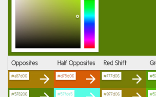

HTML5 & CSS3 (and Sass!)
HTML and CSS is my jam! I've been building websites for over 11 years, and have always been excited to watch the languages evolve. I prefer to stay as close to CSS as I can, but I use Sass for convenience and to keep my projects structured sanely.
Javascript
Javascript is becoming more and more exciting to me the more I learn about it. Although I've built a lot of websites, I've relied on Jquery in the past so I didn't have to know much Javascript. Not any more!
Back End Languages
I prefer front end work, but I've dabbled in back end as well. I have used PHP with Codeigniter & Mysql to create dynamic database driven sites in the past. Nowadays I prefer to do anything server side in Node.js.
Tools & Software
I've used Photoshop extensively both as a design tool and to edit photos that I've taken, and I also have some experience using Illustrator. Other tools I use in my workflow include Git (check out my github!) and gulp.
Projects
Project 1
Project description goes here. It may be longer than this?
Project 1
Project description goes here. It may be longer than this?
Project 1
Project description goes here. It may be longer than this?